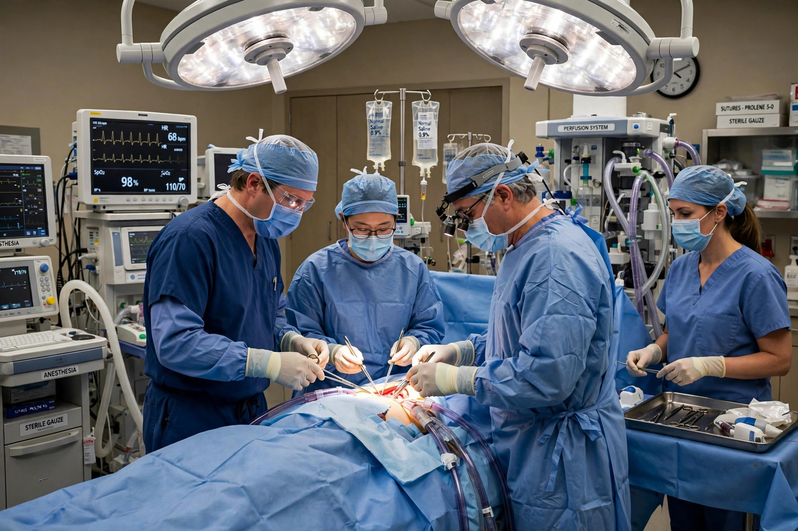

| Other names | CABG (pronounced "cabbage") |
|---|---|
| Specialty | Cardiothoracic surgery |
| ICD-9-CM | 36.1 |
Coronary artery bypass surgery, commonly abbreviated CABG, is a surgical procedure in which a blood vessel is grafted around a blocked or narrowed coronary artery to restore blood flow to the heart muscle. It is performed to treat severe coronary artery disease and to reduce the risk of heart attack and death.
The most common grafts are the great saphenous vein from the leg, the internal thoracic (internal mammary) artery from the chest wall — which has the best long-term patency, particularly for the left anterior descending artery — and the radial artery from the forearm. Conventionally the operation is performed on a stopped heart supported by a heart–lung machine ("on-pump" CABG); in off-pump (beating-heart) CABG the surgeon stabilises the beating heart, and in minimally invasive approaches (MIDCAB) only a small chest incision is used.
The modern era of the operation began in the late 1960s: René Favaloro at the Cleveland Clinic published his pioneering series of saphenous vein bypass grafts in 1968, building on earlier work by surgeons such as Michael DeBakey and the Soviet surgeon Vasilii Kolesov, who performed a mammary-to-coronary anastomosis in 1964. The technique spread rapidly through the 1970s and remains one of the most frequently performed major operations worldwide.
CABG improves survival and relieves angina in appropriately selected patients, particularly those with multi-vessel disease, left main coronary disease or diabetes. Compared with percutaneous coronary intervention (PCI, stenting), CABG generally offers more durable revascularisation for complex disease at the cost of a longer recovery. Long-term success depends on graft choice and control of risk factors such as smoking, hypertension and cholesterol.